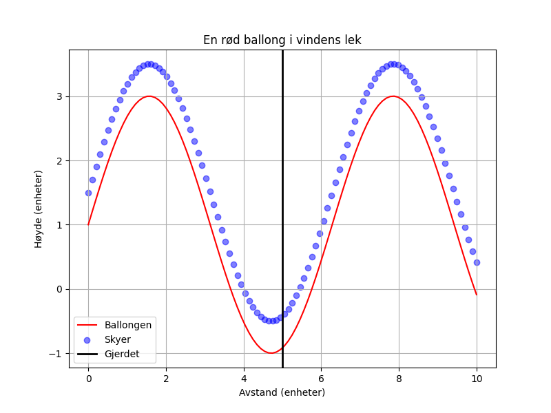

En rød ballong i vindens lek, flyr over gjerdet, lett og blek. Høyt mot skyer, blå og små, hvor ingen mennesker kan nå.

import matplotlib.pyplot as plt
import numpy as np
# Dikt
dikt = """
En rød ballong i vindens lek,
flyr over gjerdet, lett og blek.
Høyt mot skyer, blå og små,
hvor ingen mennesker kan nå.
"""
# Data for visualisering
x = np.linspace(0, 10, 100)
y = np.sin(x) * 2 + 1 # Ballongen flyr oppover, med en sinusbølge
# Plotting
plt.figure(figsize=(8, 6))
plt.plot(x, y, color='red', label='Ballongen')
# Skyer
plt.scatter(x, y + 0.5, color='blue', alpha=0.5, label='Skyer')
# Gjerdet
plt.axvline(x=5, color='black', linewidth=2, label='Gjerdet')
# Tittel og etiketter
plt.title('En rød ballong i vindens lek')
plt.xlabel('Avstand (enheter)')
plt.ylabel('Høyde (enheter)')
plt.legend()
plt.grid(True)
# Lagre figuren
plt.savefig(output_path)execution_ok=True fallback_used=False image_ok=True